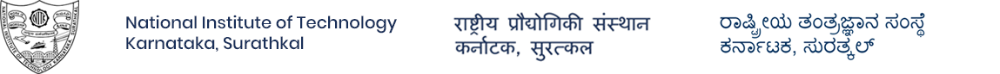
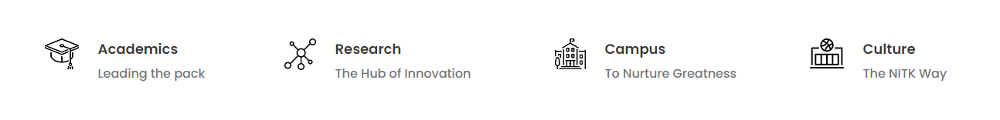
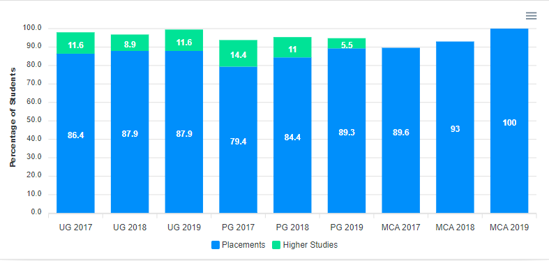

registrar@nitk.ac.in 0824 247 4000


drop down menu by Css3Menu.com

News and Updates
NOV 12, 2021
NITK Faculty Researchers in Stanford University List of Top 2% Scientist
NOV 03, 2021
Doctor of Science for Sri Suhas Yathiraj & an interview with him
JAN 04, 2022
Dr. Vinoth Srinivasan has received grant under Start Research Grant(SRG)
DEC 30, 2021
Best Paper Award to Dr. Biswajit R Bhowmik at the 18th IEEE INDICON 2021
View all News -->
Announcements
DEC 25, 2021
ATTENTION-FIRST YEAR B.TECH STUDENTS AY-2021-22
DEC 18, 2021
Academic/research activities for PG & PhD students in the even semester
DEC 24, 2021
Project Associate Advertisement for SERB-SRG project in Chemistry
DEC 21, 2021
FEE PAYMENT FOR THE EVEN SEMESTER 2021-22(Instructions w.r.t payment)
View all Announcements -->
Upcoming Events
30 MAY
7-Days Advanced Topics SERB Sponsored Workshop on Advanced Topics in Network Security and Cryptography
Starts: 30/05/2022
Ends: 05/06/2022
09 JUN
2nd International Conference on Computational Electronics for Wireless Communications(ICCWC-2022)
Starts: 09/06/2022
Ends: 10/06/2022
Statistics
Vision
To facilitate transformation of students into good human beings, responsible citizens and competent professionals, focusing on the assimilation, generation and dissemination of knowledge.
Mission
Impart quality education to meet the needs of profession and society, and achieve excellence in teaching-learning and research.
Attract and develop talented and committed human resources, and provide an environment conducive to innovation, creativity, team-spirit and entrepreneurial leadership.
Facilitate effective interactions among faculty and students, and foster networking with alumni, industries, institutions and other stake-holders.
Practice and promote high standards of professional ethics, transparency and accountability.
History
National Institute of Technology Karnataka, Surathkal is located in Mangalore City, Karnataka State, India. The Institute was established as Karnataka Regional Engineering College (KREC) in 1960, and upgraded as National Institute of Technology Karnataka (NITK) in 2002
Mangalore is the headquarters of the coastal district of Dakshina Kannada, and boasts an important centre of education, business and trade in the state. Sri. U. Srinivasa Mallya, a visionary and a philanthropist, contributed immensely to the development of the coastal region of Karnataka, and his effort towards establishment of KREC (now NITK) is the most significant one. In recognition of his role as the founder and architect of the institute, the campus premises is named after him as Srinivasnagar.